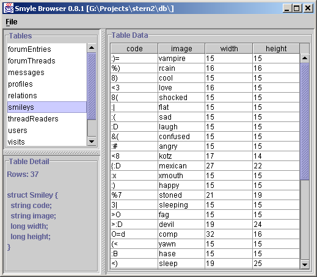

SMYLE: Browser
The Smyle Browser is a Swing-based application to view the structure and definition of Smyle stores. It has been added in Smyle 0.8.1 and is currently fairly limited; it fails to display the contents of tables with a too complex structure.
Usage
First make sure you have smyle.jar in your classpath, then execute:
java drjava.smyle.Browser
This will open the browser's main window. Choose File/Open, go to your Smyle store
directory and choose any of the .smy files. You should see something like this:

Just click on any of the tables to display its structure and contents.
|
Author: Stefan Reich (doc@drjava.de) Smyle Homepage: www.drjava.de/smyle |